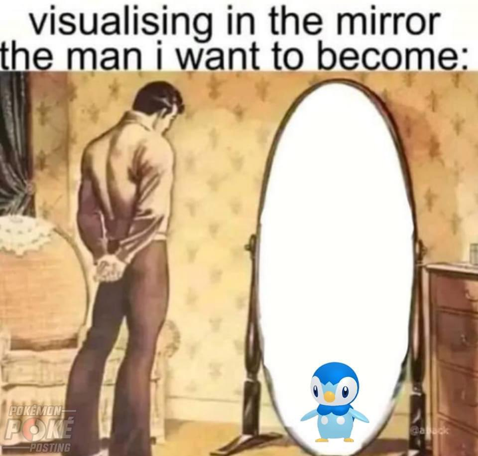
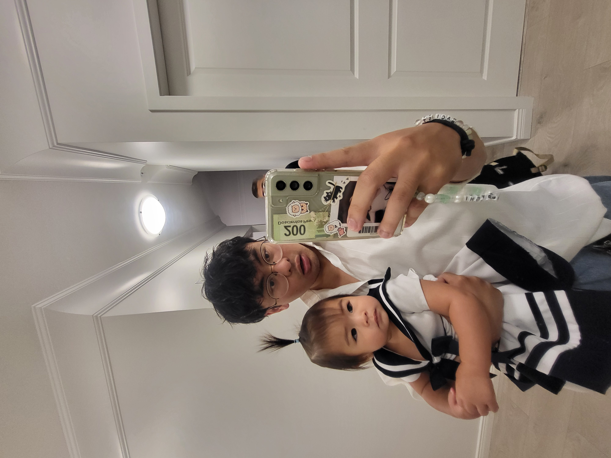
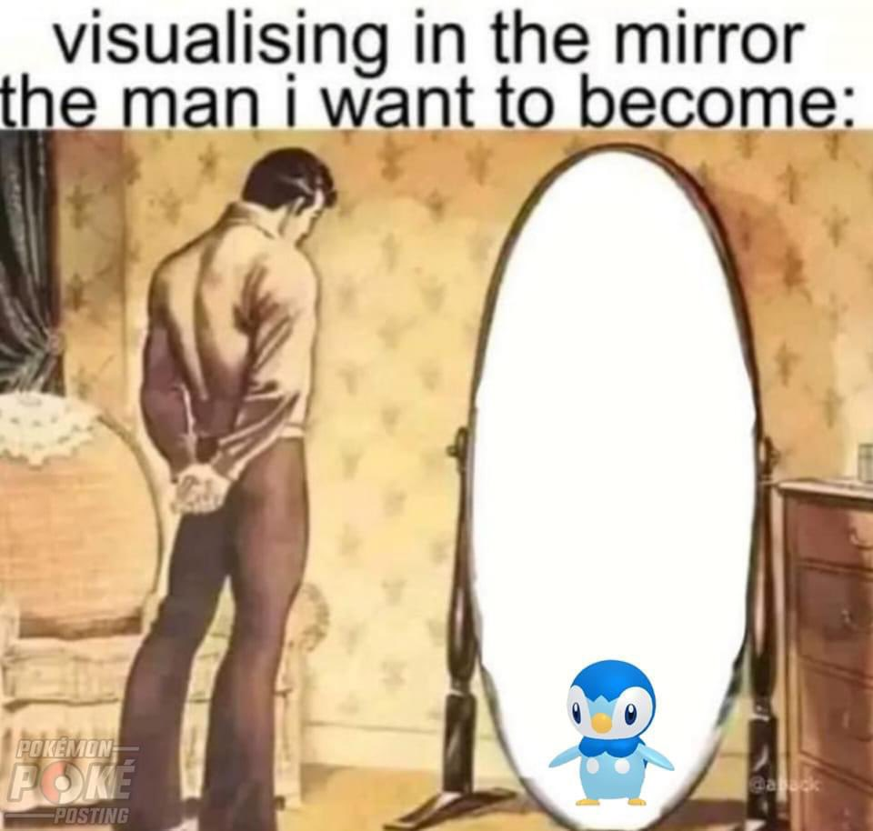
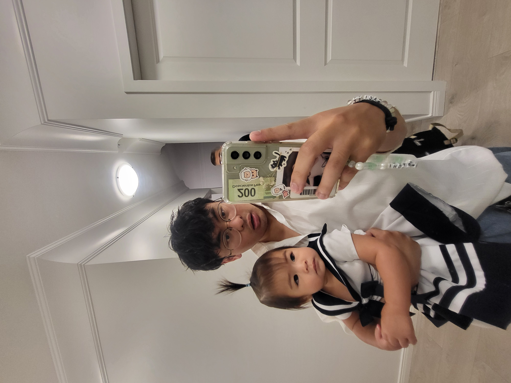
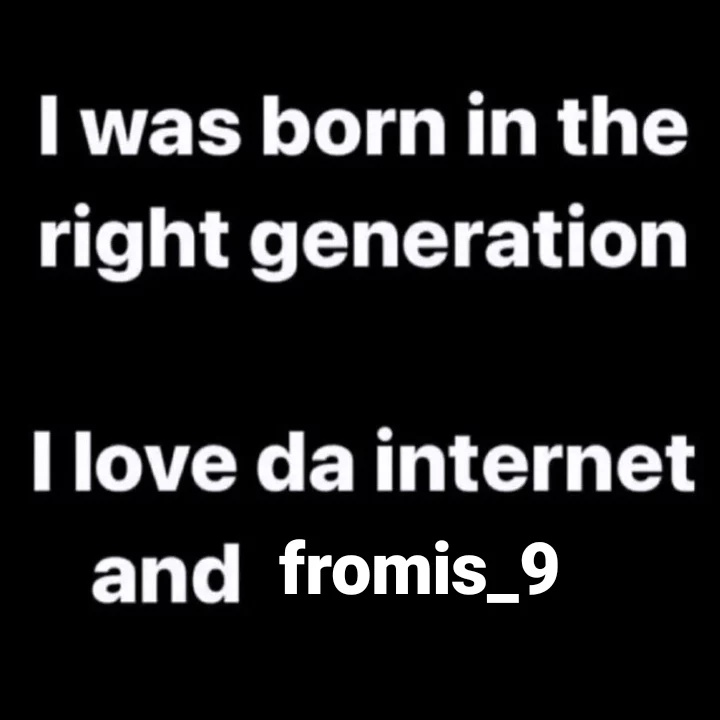
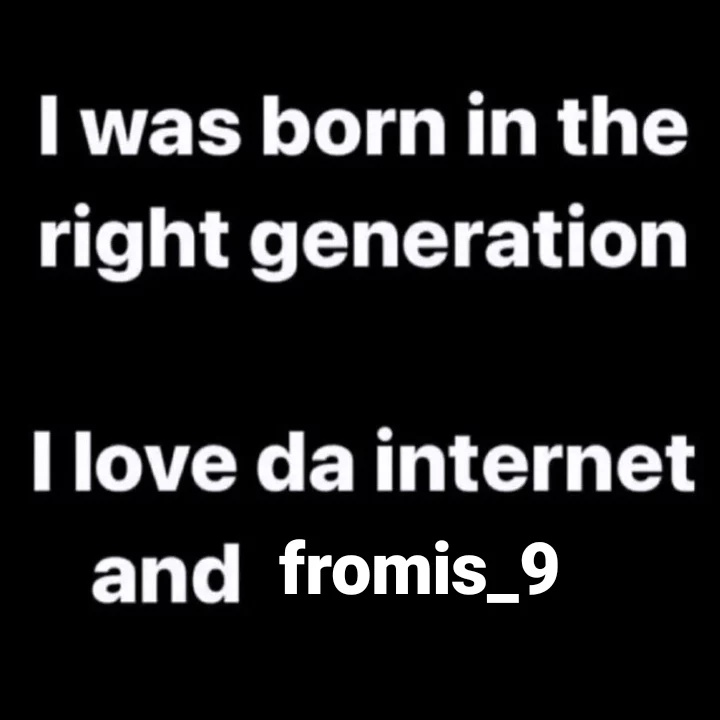

Johann Ferrera's Visualizations
Personal Introduction
My name is Johann Ferrera and I am an Interactive Arts and Technology major. I enjoy developing and designing websites. In my spare time I play sports mediocrely.
Education
I attended University of Fraser Valley from 2021-2022, and currently am attending Simon Fraser University. There, I have taken classes in Web Development and Multimedia Programming, and currently are taking classes in HCI, Mobile Development, AI, and Data Visualization.
Skills
I am experienced in working with HTML, CSS, JavaScript, React, and TailwindCSS in terms of web development. For programming, I have experience working with Java, C++, and Python. For design, I am experienced with the Adobe suite and Figma.
Experience
I have experience working as a freelance web developer. I also created websites in class, like this website for a fictional brand, and this personal portfolio I created in my web dev class.
Images describing me
 



 
